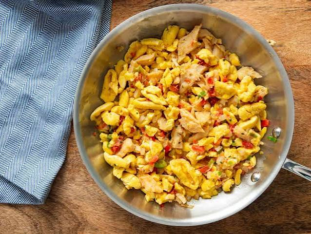

Ackee and Saltfish

Description
Ackee and saltfish is the national dish of Jamaica, and Jamaicans eat it at any time of the day
– at breakfast, lunch, and dinner. We only change what we accompany it with.
Ingredients
- 1 Canned Ackee
- ½ lb Saltfish
- 1 Small onions Sliced
- 2 Garlic cloves
- 1 Small tomato Diced
- ½ Green bell pepper
- ½ Red bell pepper
- 1 Stalk scallions Chopped
- 2 Sprig thyme
- ¼ Scotch bonnet pepper Seeds removed
- ½ tsp Black pepper
- 2 tbsp Cooking oil
Steps
- Wash away the excess salt from the saltfish and soak it in cold water for at least two hours.
Soaking overnight is better.
- Pour away the water, then, in fresh water, scald the saltfish for 10-15 minutes.
-
Remove from the heat and pour away the hot water. Wash the saltfish in cold water to cool it. If using boneless saltfish, flake and set it aside.
Otherwise, remove the skin and debone the saltfish. Flake the saltfish and set aside.
- Heat the oil in a skillet pan over medium heat and sauté the onion, garlic, scallions, sweet pepper, tomato, and scotch bonnet pepper for 3 minutes.
- Add the flaked saltfish and cook for another 3 minutes.
- Add the ackee, lower the heat and let it simmer for another 10-15 minutes
- Add the black pepper, turn the heat off and serve.
Home